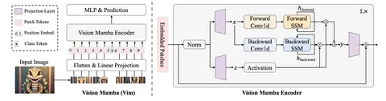

Беспилотный транспорт в свой работе полагается на данные различных сенсоров: камер, лидаров, радаров. Для обработки этих данных — например, для детекции объектов на дороге — обычно используют нейросети. Вычислительная мощность железа на борту автомобиля ограничена, поэтому нейросети должны быть не только точными, но и быстрыми. Сегодня разберём статью о таком фреймворке на основе мощного бэкбона Mamba.
Подход space state models часто используют в LLM для моделирования длинных последовательностей. Авторы предлагают адаптировать этот подход для компьютерного зрения.
В основе архитектуры — deep-learning-модель Mamba. Визуальные данные чувствительны к взаимному расположению и контексту. Чтобы модель учитывала это и справилась с CV, авторы предложили добавить к ней новый блок Bidirectional Mamba с энкодером.
Архитектура Vision Mamba (или просто Vim) — на схеме. Входное изображение делится на патчи, которые превращаются в токены. Последовательность токенов подаётся на вход Vim-энкодеру. В отличие от Mamba, новый энкодер может перенаправлять токены не только вперёд, но и назад по флоу обработки.
Полученную модель можно использовать в качестве бэкбона для 2D-задач: для классификации, детекции и сегментации. Особенность Vision Mamba в том, что она растёт не квадратично от количества токенов как трансформеры, а линейно. А значит, хорошо подходит для задач CV на изображениях с высоким разрешением.
Vision Mamba немного превзошла по top-1 accuracy на ImageNet трансформенную модель DeiT и значительно обогнала её по скорости и потреблению памяти.
Познакомиться с новой моделью можно на GitHub авторов.
Разбор подготовил
404 driver not found
